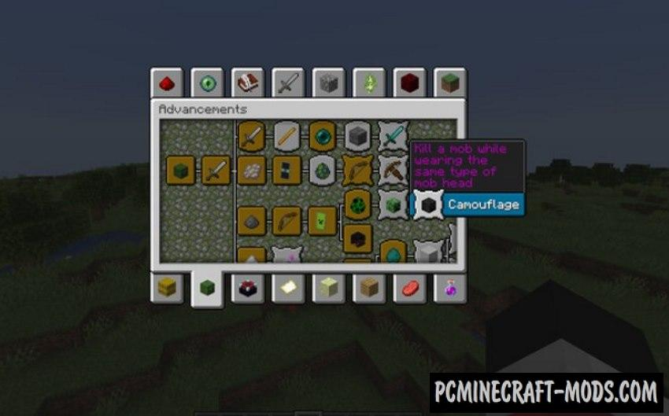
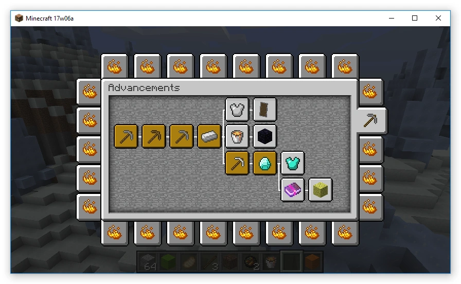

Данная идея у меня появилась ещё со времён написания темы про Хапхазард. Тогда я был удивлён, почему ещё ни один популярный сервер, не сделал такую механику, хотя она появилась с версии 1.12.
Суть механики состоит в том, что можно сделать свои собственные достижения в меню самого Майнкрафта.
 Сорян за качество :)В хабах будут все вкладки с достижениями со всех мини игр. По идее вкладок должно хватить, т.к. можно создать целых 28 штук).
При переходе в ВВ, будут отображаться ванильные достижения, а вот в КВ уже можно придумать ещё куча интересных вкладок с достижениями, к примеру связанные с киллами, смертями, работой и т.п. В хабе в свою очередь будет только одна вкладка достижений ВВ и одна для КВ, в них можно просто придумать достижения по типу "Пройдена ветка "Работа" и т.п.", с ВВ такая же история.
К достижениям можно так же присвоить опыт и теслинги за их выполнение.
Таким образом можно полностью избавиться от достижений в инвентаре и перейти на новый уровень.
Надеюсь данная идея кому-то понравится и он/она решит написать её. Если так будет, то пожалуйста припишите автора идеи VlaGrom :)